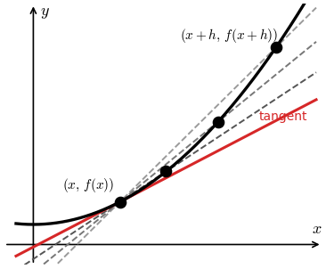

Lesson 11: The Limit Definition of the Derivative
We are finally ready to solve the tangent line problem. This is differential calculus. It solves the tangent line problem using limits, which is why we started the course with a study of limits.
The solution is the derivative of a function. It is how we describe an instantaneous rate of change, and so many scientific and technological developments depend on it.
The average rate of change of a function over an interval is the slope of the secant line through the two endpoints.
Average Rate of Change
Find the average rate of change of \(f(x) = 3\sqrt{x + 4}\) from \(x = -3\) to \(x = 5\).
An average rate of change over an interval does not capture how fast the function is changing at a single instant. That instantaneous rate of change is the slope of a tangent line.
The Difference Quotient
This is the average rate of change of \(f(x)\) as \(x\) increases by \(h\). It is also the slope of a secant line.
Given \(f(x) = x^2\), find its difference quotient.
As the second point approaches the point of tangency, that is, as \(h\) approaches zero, the secant lines approach the tangent line.
The Limit Definition of the Derivative
The derivative gives the slope of the tangent line. In other words, it gives the function’s instantaneous rate of change.

Use the limit definition to differentiate \(f(x) = x^2\).
Use the limit definition to differentiate \(f(x) = \frac{1}{x}\).
Now You Try
Use the limit definition to differentiate \(f(x) = 2x^2 + 1\).
A Sample Exam Problem
Given \(f(x) = 3x^2 - 8x + 1\), find its difference quotient. Then find \(f\,'(x)\) by evaluating the limit of the difference quotient.